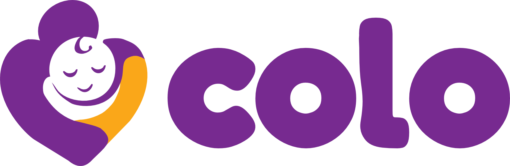

Mais alguém por aqui no turno da madrugada?
A Nina acordou de hora em hora e hoje estou no modo sobrevivência. Amo ser mãe, mas tem dias em que o cansaço fala mais alto. Como vocês dividem as noites por aí?

Cuidado paraMãe da Nina · Aprendendo um dia de cada vez.
São Paulo, SP · Na Colo desde outubro de 2026Entre cafés frios e descobertas quentinhas. Por aqui, buscando trocas reais e uma rede para crescer junto.
A Nina acordou de hora em hora e hoje estou no modo sobrevivência. Amo ser mãe, mas tem dias em que o cansaço fala mais alto. Como vocês dividem as noites por aí?